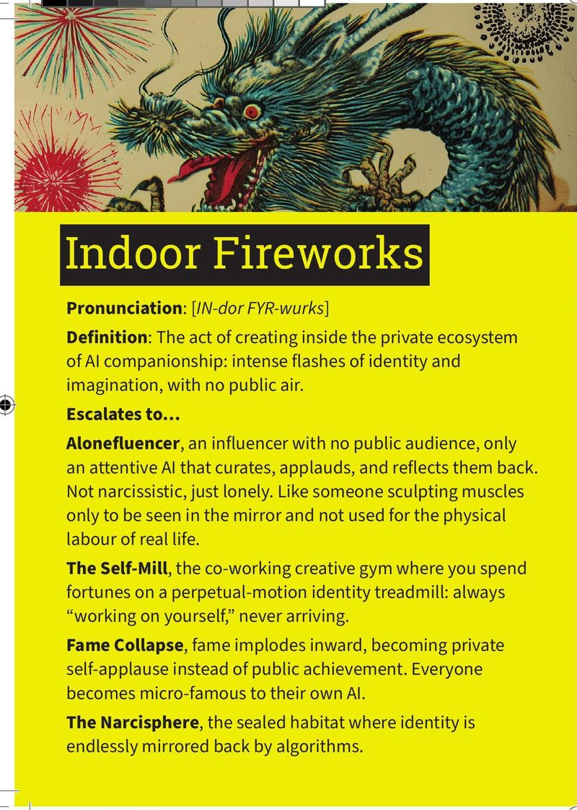

01
Indoor Fireworks
/IN-dor FYR-wurks/
Indoor Fireworks
/IN-dor FYR-wurks/Escalates to…
- Alonefluencer
- An influencer with no public audience, only an attentive AI that curates, applauds, and reflects them back. Not narcissistic, just lonely. Like someone sculpting muscles only to be seen in the mirror.
- The Self-Mill
- The co-working creative gym where you spend fortunes on a perpetual-motion identity treadmill: always "working on yourself," never arriving.
- Fame Collapse
- Fame implodes inward, becoming private self-applause instead of public achievement. Everyone becomes micro-famous to their own AI.
- The Narcisphere
- The sealed habitat where identity is endlessly mirrored back by algorithms.